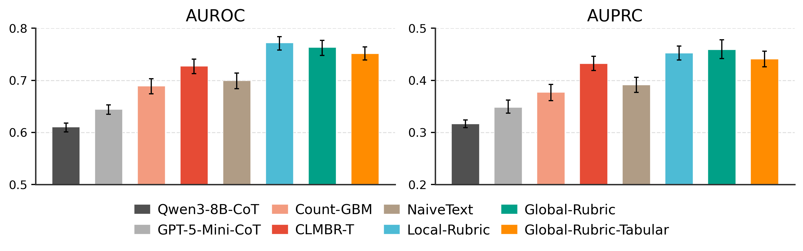
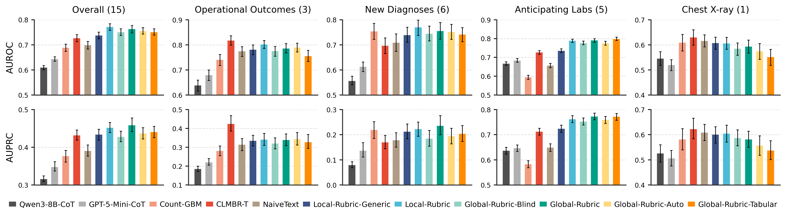
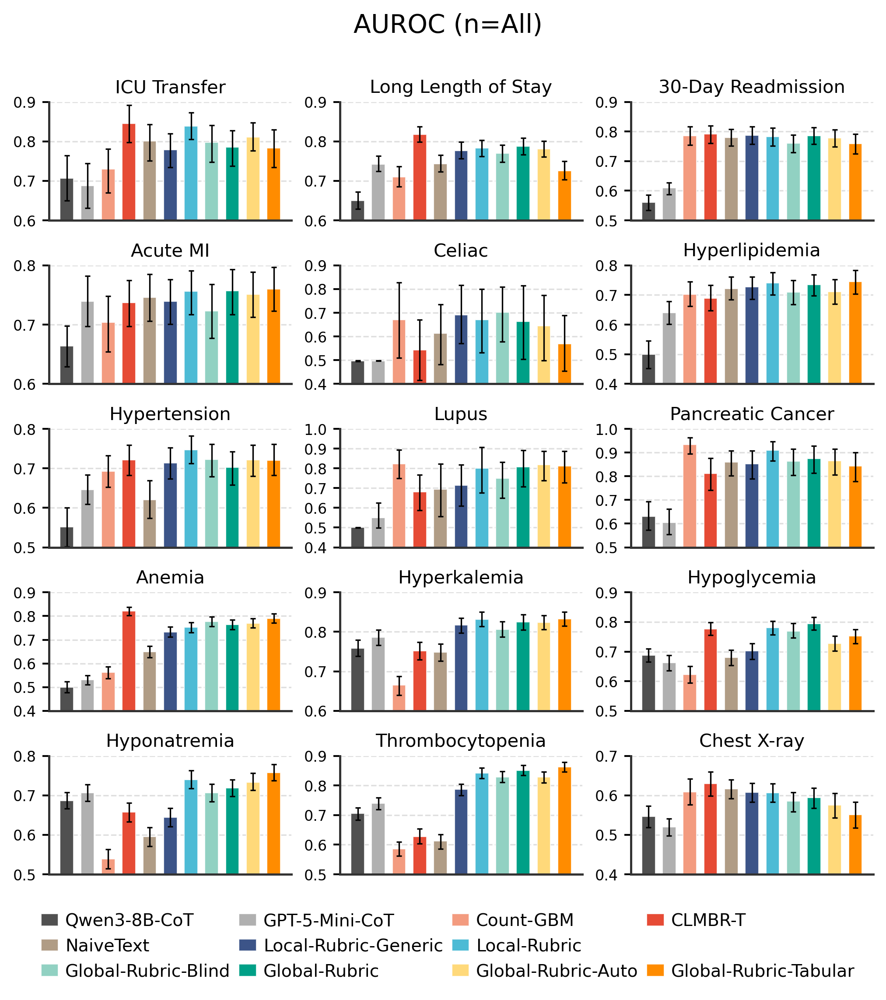
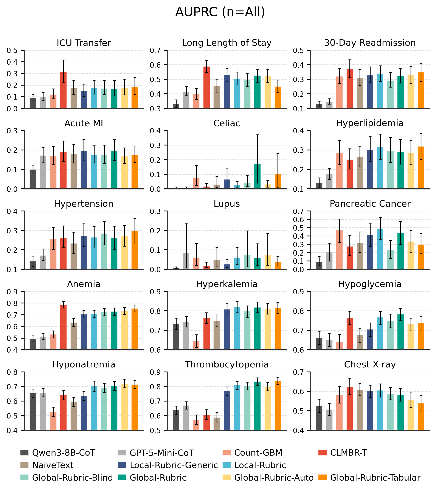

Our agentic pipeline uses LLMs to construct rubrics — structured specifications that transform raw, heterogeneous data into powerful representations for downstream supervised learning.
Label-stratified k-means clustering in embedding space selects 40 diverse, representative examples (20 per class) as medoids from the training set.
An LLM agent analyzes the 40 medoid EHRs in-context and synthesizes a task-specific rubric — a structured template defining what evidence to extract.
The output is a systematic rubric ℛ with sections like Demographics, CV Risk Factors, Comorbidities, Temporal Trends, and Alert Flags.
An LLM fills in every rubric field for each patient using only data from their EHR. High fidelity, but requires one LLM call per example.
An LLM generates a deterministic Python parser that applies the rubric via string/regex matching — no LLM calls needed at inference time.
An LLM generates a script converting rubric outputs into numeric feature vectors, enabling standard ML models like XGBoost.
A single shared rubric is synthesized from a small subset of examples and applied uniformly to all inputs.
A task-conditioned summary is generated per example by the LLM, producing structured sections like Patient Snapshot, Risk Factors, and Protective Factors.
The rubric transforms a raw, noisy text serialization into a structured, evidence-organized representation:
## Patient Demographics
- Patient age: 78, FEMALE [...]
## Detailed Past Medical Visits
### Inpatient Visit (14 days to pred. time)
Conditions: Acute posthemorrhagic anemia, pH: 7.25, 7.31 [...]
Medications: furosemide 20 MG, pantoprazole 20 MG [...]
Procedures: Chest x-ray, Electrocardiogram [...]
### ER Visit (87 days before)
Conditions: Benign essential hypertension, Chest pain [...]
Medications: ondansetron, nitroglycerin [...]
1. Patient Snapshot
27 yo hispanic male. Recurrent cardiology visits for congenital anomaly of coronary artery [...]
2. Main Risk Factors
- Congenital coronary artery anomaly (structural predisposition to ischemia)
- Tobacco exposure (smokeless) [...]
3. Protective Factors
- Young age (27), Normal BMI (21-22)
- No diabetes or renal impairment [...]
6. Overall Risk Impression
Elevated risk of acute MI despite favorable metabolic parameters [...]
§3. Demographics
55 | FEMALE | [...]
§6. Recent Cardiac Symptoms (last 365d)
- Chest pain/angina: No
- Dyspnea: Yes [...]
§12. Other Relevant Labs
- Creatinine: 1.12 (2023-12-02)
- eGFR: No data [...]
§17. Known Risk Factors
- Diabetes: No, Hyperlipidemia: Yes
- Family hx of premature CAD: Unknown [...]
We evaluate on the EHRSHOT benchmark: 15 clinical prediction tasks across 4 categories with 6,739 patients. Rubric methods are compared against count-feature models, naive text embeddings, zero-shot chain-of-thought prompting, and CLMBR-T, a clinical foundation model pretrained on 2.57M patients.
| Method | AUROC (n=40) | AUPRC (n=40) | AUROC (n=All) | AUPRC (n=All) |
|---|---|---|---|---|
| Local-Rubric | 0.717 | 0.406 | 0.772 | 0.452 |
| Global-Rubric | 0.700 | 0.400 | 0.763 | 0.459 |
| Global-Rubric-Auto | 0.690 | 0.382 | 0.751 | 0.445 |
| CLMBR-T (2.57M patients) | 0.657 | 0.356 | 0.727 | 0.432 |
| NaiveText | 0.638 | 0.343 | 0.699 | 0.391 |
| Count-GBM | 0.608 | 0.311 | 0.679 | 0.387 |


